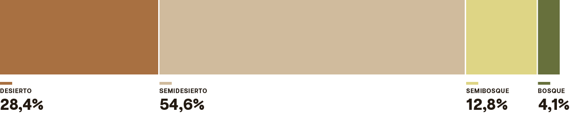

Hallazgos
Contar con lo mínimo
La fragilidad de los ecosistemas de noticias locales en Venezuela
El derecho a saber lo que ocurre en la propia comunidad no está garantizado en buena parte del territorio venezolano, en pocas palabras porque la prensa cuenta con lo mínimo para seguir llamándose como tal. El estudio de Desiertos de Noticias Locales, que IPYS Venezuela realiza desde 2020, encontró en su edición 2026 que el 83% de los 366 municipios y parroquias estudiados de todo el país tiene una oferta informativa local insuficiente o frágil: 104 de las unidades encuadran en la categoría de desierto (condiciones insuficientes para el ejercicio del periodismo profesional) absoluto y 200 en la de semidesierto (condiciones frágiles). Ponderado por población, esto significa que 17,7 de los 28,7 millones de habitantes de Venezuela —61,7%— viven hoy en un territorio donde acceder a información verificada, plural e independiente y sostenida en el tiempo sobre la realidad más próxima es, en el mejor de los casos, un privilegio intermitente.

Las cifras recogidas en la investigación que durante cuatro meses sondeó a 548 proyectos periodísticos en las 24 entidades del país, muestra más que un problema de mercado, modelo de negocio o de infraestructura mediática. Lo que describe es un problema de salud democrática. La información local es un insumo básico para que una comunidad pueda evaluar la gestión de los servicios públicos, conocer posibles irregularidades en una gobernación o saber cómo se está atendiendo una emergencia, como se pudo comprobar este año 2026 durante los terremotos del 24 de junio (ver análisis especial). Cuando esa información desaparece o se reduce a la versión oficial sin contraste, disminuye la posibilidad de que la ciudadanía ejerza la contraloría sobre el poder que más directamente incide en su vida cotidiana. Y el estudio confirma que ese componente fiscalizador es, precisamente, el más débil de todos: sólo el 18,4% de los proyectos periodísticos locales encuestados declara hacer explícitamente “investigación y vigilancia al poder”, muy por debajo de temas menos comprometedores como deporte o cultura.
La fecha de esta fotografía importa. La encuesta se aplicó entre abril y julio de 2026, pocos meses después de que Venezuela cerrara 2025 con 25 periodistas presos, el registro más alto de su historia reciente, según el Informe Anual de Libertades Informativas de IPYS Venezuela. Ese informe documentó, además, que el 95,8% de una muestra nacional de periodistas admitió haberse autocensurado por miedo durante 2025; que 8 de cada 10 retiraron su firma de los contenidos que producían y que casi 9 de cada 10 redujeron la cobertura presencial en favor del trabajo remoto.
El hallazgo central de este nuevo estudio de IPYS Venezuela —un país mayoritariamente sumergido en la categoría de desierto de noticias, sostenido por medios institucionalmente frágiles y económicamente inestables, con la autocensura como principal mecanismo de restricción— corresponde a ese momento particular de la prensa venezolana. Los resultados, entonces, permiten observar en el territorio un fenómeno que ya había sido constatado a escala nacional, y evidenciar cómo esas condiciones frágiles en términos extremos se expresan en las capacidades locales para producir y sostener información periodística.
Colores y Significados de cada Categoria
El diagnóstico de los desiertos de noticias locales en Venezuela nació en 2020 con un primer mapeo que identificó que al menos cinco millones de personas vivían en localidades sin oferta suficiente de información local. Se actualizó en 2023, con un análisis ampliado a 365 unidades territoriales y el hallazgo de que la cifra alcanzaba a siete millones de personas en desierto y a ocho millones adicionales en lo que entonces se llamaba “desierto moderado”. En 2024 se sumó una fase cualitativa para entender el funcionamiento operativo de los medios que sobrevivían en esos contextos tan delicados. La edición 2026, cuyos resultados se presentan aquí, introdujo un ajuste metodológico relevante: en lugar de tres categorías, adoptó la clasificación de cuatro niveles usada por el Foro de Periodismo Argentino (FOPEA), lo que permite comparar la situación venezolana con la de otros países de la región bajo un mismo lenguaje (ver análisis comparativo internacional).
Las Cuatro Categorías se definen de la siguiente manera:
- En el desierto de noticias locales casi no hay periodismo profesional. Pocos proyectos con ingresos propios logran producir información regular, y lo poco que circula repite la versión oficial sin que nadie la contraste ni la verifique. Son lugares donde existen condiciones insuficientes para el ejercicio del oficio, aunque puede haber medios y periodistas.
- El semidesierto es un paso adelante, pero no mucho más. La oferta sigue siendo escasa y, aunque hay algo más de movimiento noticioso, buena parte del contenido sigue siendo eco de lo que dicen las autoridades. Las condiciones para el ejercicio del periodismo profesional son débiles.
- En el semibosque el panorama empieza a cambiar de verdad. Varios medios con ingresos propios cubren lo local de forma constante, y ya se nota un periodismo que contrasta fuentes, verifica y le da seguimiento a los temas, aunque el entorno para ejercerlo siga siendo inestable o arriesgado.
- Y el bosque de noticias locales es la categoría que todo ecosistema mediático querría alcanzar. Reúne muchos proyectos de perfil diverso, con varias fuentes de ingreso cada uno, que informan con regularidad, autonomía editorial y verificación independiente, y que, además, disponen detienen perspectivas reales de sostenerse en el tiempo. En estas unidades territoriales, los peligros para el ejercicio del periodismo profesional consiguen ser sorteados.
Para conocer cómo se informa la población sobre lo que ocurre en su propio territorio, el estudio examinó 366 unidades territoriales: 335 municipios del país y, de manera excepcional, las parroquias del Distrito Capital y de La Guaira, donde este nivel de desagregación permite apreciar mejor las diferencias internas. Ante la ausencia de un censo oficial actualizado, se utilizaron los datos poblacionales de la Encuesta de Condiciones de Vida (Encovi) 2021, de la Universidad Católica Andrés Bello, por ser la fuente más reciente disponible que ofrece información desagregada a escala municipal y parroquial. Entre abril y julio de 2026, 11 periodistas investigadores realizaron el levantamiento de campo. La investigación se basó en el mapeo de medios y la aplicación de encuestas, y tomó como referencia las condiciones registradas por estos entre octubre de 2025 y marzo de 2026. Por lo tanto, mide el clima del periodismo local existente entre el final de la administración de Nicolás Maduro y el comienzo de la de Delcy Rodríguez.
El objetivo no fue hacer un inventario de cada medio existente, sino identificar patrones, brechas y condiciones de regularidad, diversidad y sostenibilidad de la oferta periodística local. Cuando no fue posible obtener información directamente de un proyecto periodístico, el equipo recurrió a fuentes secundarias verificables y aplicó los mismos criterios de análisis.
Lo que revela el mapa
La presencia de medios es relevante para que haya periodismo, pero resulta apenas una parte de la historia. Para entender qué tan sólido es un ecosistema de noticias locales importa dónde están esos proyectos; con qué recursos se sostienen, y qué capacidad tienen para producir información propia y plural, hasta dónde pueden llegar y bajo qué condiciones ejercen el periodismo. Los hallazgos de este estudio muestran que estas variables se acumulan de manera desigual en el territorio venezolano:
1) La geografía del desierto
Los desiertos de noticias locales no se distribuyen de manera uniforme por el país. Estados como Falcón, Cojedes y Táchira tienen la totalidad o la gran mayoría de sus municipios encuadrados en desierto o semidesierto, sin una sola localidad clasificada como bosque. En el extremo opuesto, Miranda, Bolívar, Carabobo y Zulia concentran las escasas localidades categorizadas como bosque del país, casi siempre asociadas a sus capitales o municipios de mayor actividad económica. En el extremo de las condiciones más débiles se ubican Amazonas, con sus siete municipios clasificados como desierto, y La Guaira, donde diez de sus once parroquias están en esa categoría. En el caso de La Guaira, esta fragilidad resulta especialmente preocupante en 2026, año en que fue uno de los estados más afectados por los terremotos del 24 de junio, como se analiza en el apartado sobre la cobertura de crisis socioambientales.
El tamaño del municipio tampoco protege del desierto. De los 104 municipios en esa categoría, poco más de la mitad (51) son localidades medianas de entre 25.000 y 100.000 habitantes. El desierto de noticias venezolano no es, entonces, un fenómeno exclusivamente rural o de pueblos remotos. También alcanza a ciudades intermedias con decenas de miles de habitantes.
2) Quién sostiene la información que sí existe
Entre los 548 proyectos periodísticos estudiados, el 56,9% se declara de naturaleza privada. En segundo lugar, el 10,8 % opera sin ninguna figura jurídica formal, por encima de las organizaciones sin fines de lucro (6,8%) y las iniciativas comunitarias (6,7%). Esta carencia, que limita el acceso a financiamiento formal, determina el ejercicio de la profesión desde la precariedad; debilita la capacidad de protegerse ante una demanda o una medida de censura, y compromete la continuidad del proyecto cuando cambia el equipo fundador.
Algunas respuestas abiertas ilustran esta zona gris con claridad. Una periodista (se reserva su identidad para evitar represalias) describió su situación de este modo: “El medio tiene estructura jurídica, pero trabaja sin esa naturaleza por los momentos, dado los impuestos que esto generaría y la dificultad para cumplirlos con los ingresos actuales”. Es el retrato de un proyecto que existe legalmente en el papel, pero que no puede permitirse operar bajo esa formalidad en la práctica.
Los desafíos de sostenibilidad económica confirman esa precariedad. El 66,8% de los proyectos depende de la publicidad y el 30,1% de contenido patrocinado puntual — ambas son fuentes de ingreso inestables y atadas al ciclo económico general del país —, mientras que apenas el 5,1% cuenta con financiamiento internacional y el 6,2% no tiene ninguna fuente de ingreso.
Más allá del tipo de ingreso, también importa cuántas fuentes sostienen económicamente a cada proyecto. De los 548 estudiados, 214 (39,1%) dependen de una sola fuente, mientras que 242 (44,2%) combinan dos o más. Los 58 restantes (10,6%) no manejan esta información o prefirieron no responder.
Del total de 456 proyectos que reportan ingresos, el 53,1 % combina dos o más fuentes de financiamiento. De los 214 proyectos que dependen de un único ingreso, 151 (70,6%) se sostienen exclusivamente con publicidad. Por otro lado, 58 de los 242 que combinan varias fuentes (24%) recurren únicamente a publicidad y contenido patrocinado, dos modalidades comerciales que, como ya se mencionó anteriormente, pueden verse afectadas por las condiciones económicas cambiantes. Esto deja a una parte importante de los proyectos especialmente expuesta a la pérdida de anunciantes o patrocinios, con poco margen para compensar una caída de esos ingresos.
Esta vulnerabilidad coincide con lo que encontró el informe anual de libertades informativas de IPYS Venezuela de 2025: de 71 periodistas consultados a escala nacional, 54 (76%) vio disminuir sus ingresos durante ese año y 56 (79%) tuvo que realizar una actividad distinta al periodismo para complementar su sustento. La precarización económica es, entonces, una tendencia nacional que marca la fragilidad de los ecosistemas de noticias locales en Venezuela.
La composición de estos equipos ofrece otra pieza para caracterizar al proyecto periodístico local promedio. De los proyectos consultados, el 46,5% declaró operar con equipos de uno a tres periodistas profesionales. Esta prevalencia de redacciones reducidas, incluso unipersonales, es consistente con un modelo de periodismo local adaptado a plataformas digitales de bajo costo, donde una sola persona puede asumir de forma simultánea la producción, edición y publicación de contenidos, antes que con una estructura tradicional de redacción.
3) Dónde y sobre qué se informa
Las limitaciones económicas y las transformaciones tecnológicas se reflejan en las plataformas que usan los medios locales. El uso de Instagram (90,9%), Facebook (65,3%) y TikTok (46,4%) supera ampliamente a formatos que exigen mayor inversión, como el periódico impreso (4,7%). Esta preferencia no es solo una estrategia de alcance. En un país donde decenas de portales de noticias — entre ellos El Nacional, TalCual, Efecto Cocuyo, Runrun.es y El Pitazo — han estado bloqueados por los principales proveedores de internet del país (CANTV, Movistar, Digitel, Inter y Netuno), según el registro del observatorio Ve Sin Filtro, migrar a redes sociales es también una manera de sortear el bloqueo técnico directo a un dominio propio, aunque esto exponga al medio a depender de plataformas que no controla y que pueden suspender sus cuentas sin aviso.
El 17 de septiembre de 2026, se produjo un giro en este panorama. La Comisión Nacional de Telecomunicaciones (Conatel) informó que, en cumplimiento de instrucciones de la presidenta en funciones, Delcy Rodríguez, notificó a las empresas proveedoras de servicios de internet la habilitación técnica de varios dominios. Aunque Ve Sin Filtro verificó el restablecimiento del acceso a al menos una decena de portales, la medida fue parcial frente a los 84 dominios de medios de noticias que permanecieron restringidos.
En este contexto, la radio —el formato predominante en ediciones anteriores de este estudio— conserva un lugar que sigue siendo relevante. El 39,2% de los proyectos periodísticos locales mantienen una señal de radio AM o FM, una proporción superior a la presencia en plataformas como X o YouTube. Sin embargo, casi ninguno depende exclusivamente de ella porque 94,9% combina la señal radial con algún tipo de presencia digital. Esta convivencia entre formatos muestra que la radio no ha sido completamente desplazada por las plataformas digitales, sino que sigue funcionando como una vía complementaria para llegar a las comunidades.
Pero esa capacidad de alcance no significa que la radio esté exenta de restricciones. Aunque la señal radial no requiere conexión a internet para llegar a la audiencia ni está expuesta a bloqueos digitales de la misma manera que un portal web, las emisoras han enfrentado durante años otras formas de censura y presión. La actuación de la Comisión Nacional de Telecomunicaciones (Conatel) –mediante cierres; sanciones administrativas; dificultades para obtener o renovar concesiones, y exhortos sobre los contenidos difundidos– ha condicionado el funcionamiento y las líneas editoriales de numerosas estaciones.
En cuanto a la agenda temática, los temas sociales locales (88,1%), arte y cultura local (75,9%), gobierno y política local (73,9%), economía (73,5%), y sucesos y seguridad ciudadana (72,4%) dominan las coberturas. Al final de la lista aparece la investigación y vigilancia al poder, cubierta por apenas 18,4% de los medios, como se mencionó anteriormente. Este dato adquiere sentido pleno al cruzarlo con la pregunta sobre restricciones para difundir información durante el último trimestre de 2025 y el primer trimestre de 2026. La situación más reportada no fue la censura directa (21,9%), sino la autocensura —decisiones propias de no cubrir ciertos contenidos por precaución—, mencionada por el 53,8% de los encuestados, junto con presiones indirectas de tipo económico, político o de seguridad (28,5%). Ese repliegue ocurre, además, en un contexto en el que periodistas han sido judicializados mediante figuras como terrorismo o incitación al odio.
Esa cautela se refleja también en cómo se construyen las noticias que sí se publican. Solo el 45,4% de los proyectos afirmó que sus noticias siempre se basan en el contraste o equilibrio de fuentes con distintos puntos de vista; el 27,2% dijo basarse principalmente en fuentes oficiales o gubernamentales, y el 11,9% admitió que descansa casi totalmente en ellas. Es decir, casi cuatro de cada diez proyectos construyen sus noticias principalmente o casi por completo a partir de fuentes oficiales o gubernamentales. En este sentido, el déficit de investigación y vigilancia al poder señalado antes tiene su correlato en una práctica de manejo de fuentes que, para buena parte del ecosistema, se apoya en el relato oficial más que en la verificación independiente.
La cobertura rural expone otra dimensión de la misma precariedad, esta vez explícitamente económica más que política. La falta de capacidad operativa o económica fue la razón más citada para no cubrir zonas rurales. Esta misma dificultad se presenta al analizar la cobertura de crisis y dinámicas socioambientales, un tema que —dada su relevancia propia tras episodios como la cobertura de los recientes terremotos del 24 de junio de 2026— se desarrolla en un apartado independiente de este informe.
El periodismo “cara a cara” —basado en el contacto presencial y directo en las comunidades y espacios públicos— , está presente en el 6,8% de los proyectos (37 de 548) y tiene un perfil distintivo. Estos proyectos tienden a combinar más plataformas y recurren al podcast con mucha mayor frecuencia que el resto (37,8% frente a 3,9%). También destaca su orientación hacia la investigación y la vigilancia al poder. Por el reducido tamaño del grupo, estas características no permiten establecer un patrón, pero sí apuntan a rasgos que distinguen a estas iniciativas dentro del ecosistema de medios locales.
La adopción de herramientas tecnológicas es ya casi mayoritaria en la producción informativa, aunque no necesariamente consolidada. El 50% de los proyectos periodísticos declaró usar inteligencia artificial en sus procesos de trabajo: 36,7% de forma ocasional y 13,3% de manera regular. Otro 14,8% la está explorando y un 15,7% afirmó no utilizarla. Para el 19,2 % no se dispone de información y el 0,4 % prefirió no responder.
Perspectivas de futuro: actores y caminos posibles
La fragilidad del periodismo local en Venezuela demuestra que la migración a plataformas digitales y el esfuerzo de redacciones unipersonales no bastan para neutralizar el peso de la censura y la dependencia del relato oficial. Atrapado entre la precariedad económica y la necesidad de resguardarse de la persecución legal, el ecosistema mediático sobrevive fragmentado y con un alcance mermado para auditar al poder. Es precisamente sobre la radiografía de estas vulnerabilidades desde donde deben proyectarse las soluciones, reconociendo la responsabilidad y el margen de acción que corresponde a cada actor de la sociedad en la reconstrucción del espacio informativo.
Revertir el avance de los desiertos de noticias locales en Venezuela no depende de un solo actor, pero tampoco todos tienen la misma capacidad de incidir en el problema. Es útil pensar esta cuestión como un espectro que va desde el Estado, con la mayor capacidad formal de transformación, hasta el ciudadano individual, con distintos grados de influencia y distintos tipos de aporte posibles.
El Estado venezolano es, con claridad, el actor con mayor capacidad de cambiar este panorama: podría despenalizar el ejercicio periodístico; garantizar el acceso efectivo a la información pública; cesar todos los bloqueos digitales y detener el uso del aparato judicial como mecanismo de intimidación. Es también, según toda la evidencia recogida tanto en este estudio como en el Informe Anual de Libertades Informativas de IPYS Venezuela, el actor que actualmente concentra la mayor responsabilidad en el deterioro del ecosistema informativo local. Esta asimetría, con máxima capacidad de cambio e incierta disposición a ejercerla, explica por qué las estrategias de fortalecimiento más viables en el corto plazo que tienden a apoyarse en los demás actores no deben reemplazar la exigencia de garantías estructurales al Estado como condición necesaria para cualquier recuperación sostenida del periodismo local.
Por debajo del Estado, pero con alta influencia, se ubican los organismos internacionales de derechos humanos y de cooperación, desde la Misión Internacional Independiente de Determinación de los Hechos hasta la red Voces del Sur y el seguimiento del indicador 16.10.1 de los Objetivos de Desarrollo Sostenible. Su aporte se concentra en el monitoreo, la presión diplomática y el financiamiento de proyectos de protección y formación. Parte de su capacidad de generar cambios internos depende, en última instancia, de que el Estado venezolano esté dispuesto a acatar recomendaciones o compromisos internacionales en salvaguarda de las libertades de prensa y de expresión.
Por otro lado, el sector privado, particularmente los anunciantes, tiene una influencia potencial significativa, pero hoy está subutilizada. Dado que la publicidad es la fuente de ingresos más frecuente en el universo de los proyectos encuestados (66,8%), una mayor disposición de las empresas a pautar en medios locales plurales, en lugar de concentrar la inversión en medios nacionales, podría tener un efecto de sostenibilidad considerable.
Más cerca del terreno están las organizaciones de la sociedad civil y los gremios periodísticos, como el Sindicato Nacional de Trabajadores de la Prensa, Reporteros Sin Fronteras, la Alianza de Medios Independientes o el propio IPYS Venezuela. Su influencia es considerable porque operan donde el Estado no llega o directamente se retira: documentación de violaciones; capacitación en seguridad; apoyo psicológico gremial y visibilización internacional de las agresiones al periodismo. Este mismo estudio es un ejemplo de esa función. Al mapear los desiertos de noticias locales, genera evidencia que puede estar al servicio de quienes buscan impulsar cambios, orientar recursos y dirigir la atención hacia los territorios más desatendidos.
La academia y los centros de investigación cumplen un rol de influencia media, pero de largo alcance. Forman nuevas generaciones de periodistas, producen conocimiento que sostiene la incidencia de otros actores y establecen alianzas con medios locales para investigar conjuntamente en zonas donde el periodismo profesional ya no tiene presencia estable.
Llegamos así a los propios medios y periodistas locales, cuya influencia es directa sobre la calidad de lo que se produce, aunque está condicionada por los recursos disponibles. Este estudio muestra que ya existen estrategias de adaptación como la migración a plataformas de bajo costo. Existe además una demanda explícita de capacitación en cobertura de emergencias; verificación con inteligencia artificial y manejo de fuentes en contextos de riesgo. Fortalecer estas capacidades mediante formación y protocolos de seguridad física y digital es una intervención de costo relativamente bajo, con impacto directo en la calidad y sostenibilidad de la cobertura.
Finalmente, en el extremo de menor influencia estructural, pero no por ello irrelevante, está la ciudadanía. Su capacidad de cambio es limitada de forma individual, pero se vuelve significativa cuando se generaliza. La disposición a pagar por membresías o suscripciones (hoy solo 2,2% de los medios encuestados reporta esta vía de ingresos), a compartir y verificar contenido de medios locales confiables, y a reportar hechos directamente a periodistas de confianza en lugar de depender solo de canales oficiales son formas de sostenibilidad y de insumo informativo que ya existen en la muestra, aunque de manera marginal. La alfabetización mediática ciudadana también incide indirectamente al reducir el espacio que hoy ocupa la desinformación allí donde el periodismo profesional se ha replegado.
De este modo, recomponer el tejido informativo en las localidades sienta las bases para cualquier proceso de reconstrucción democrática en el país. La información local verificada devuelve a la ciudadanía la capacidad de fiscalizar la gestión pública; exigir rendición de cuentas y participar activamente en las decisiones de su entorno. En este horizonte de cambio, fortalecer la labor de la prensa local constituye un imperativo estratégico para garantizar la pluralidad, la transparencia y el derecho a saber en cada comunidad.